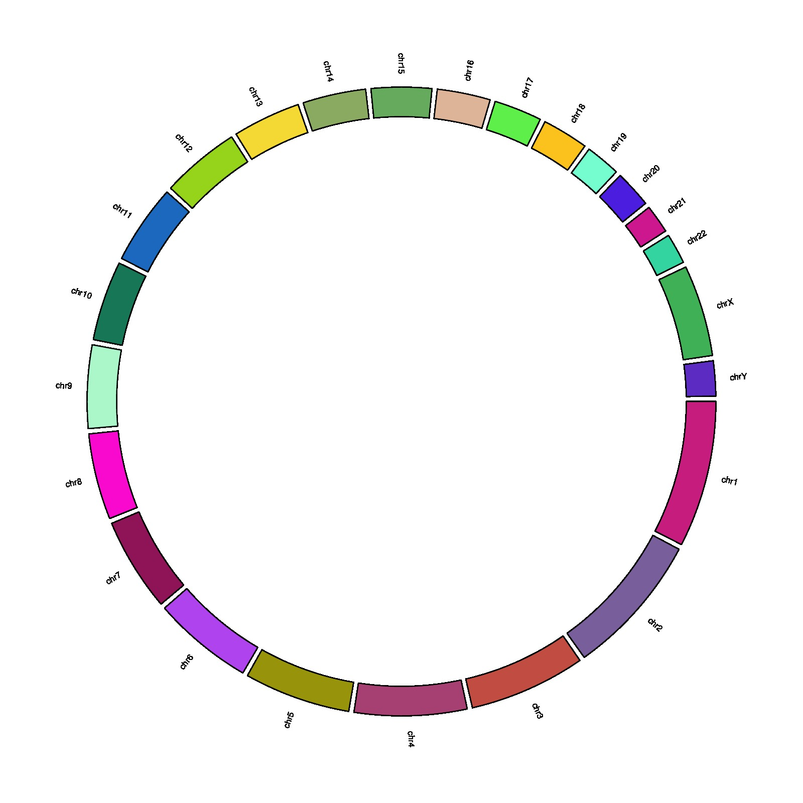

library(circlize)
par(mar = c(1, 1, 1 ,1))
circos.initializeWithIdeogram(plotType = NULL)
circos.trackPlotRegion(ylim = c(0, 1), panel.fun = function(x, y) {
chr = get.cell.meta.data("sector.index")
xlim = get.cell.meta.data("xlim")
ylim = get.cell.meta.data("ylim")
circos.rect(xlim[1], 0, xlim[2], 0.5,
col = rgb(runif(1), runif(1), runif(1)))
circos.text(mean(xlim), 0.9, chr, cex = 0.5, facing = "clockwise")
}, bg.border = NA)
circos.clear()